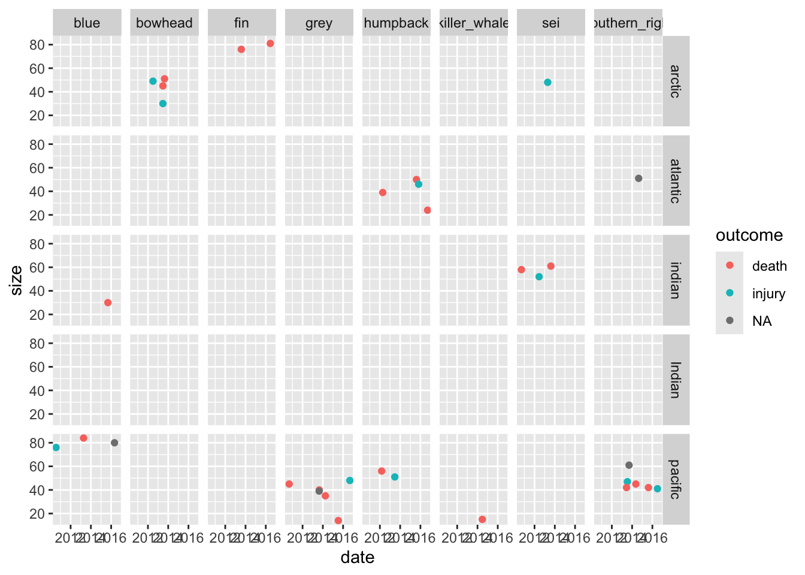
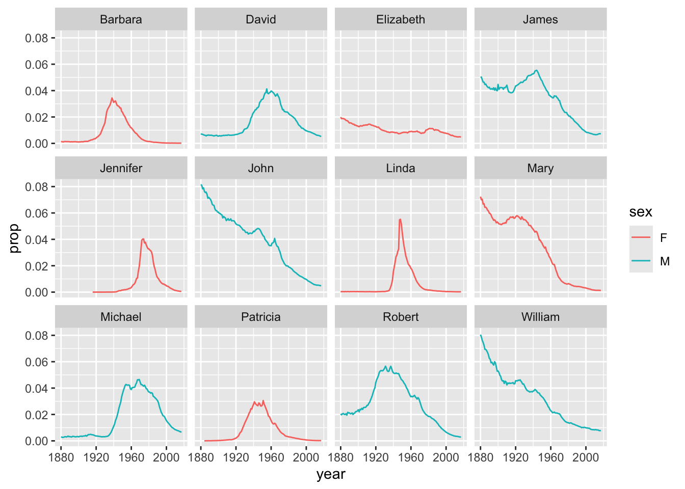
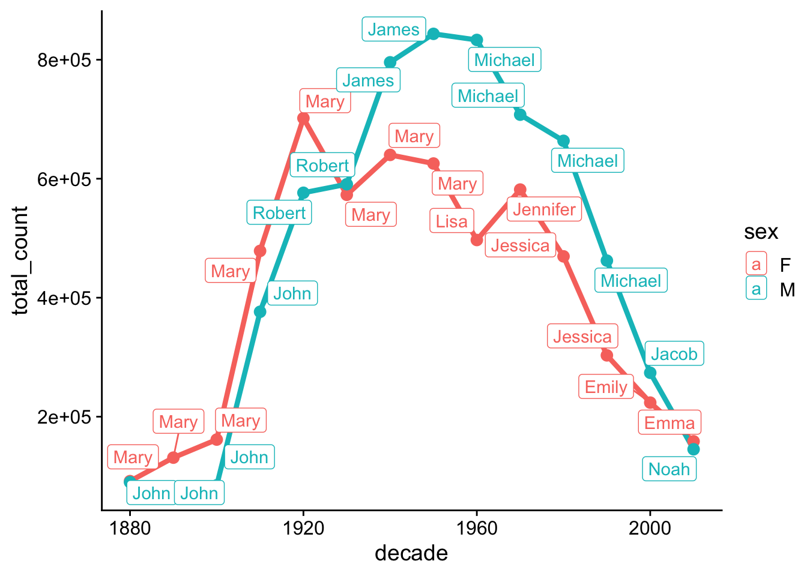

Lab 6: Data cleaning and tidy data
Goals for today
Practice data tidying with
tidyrContinue to practice data visualization with
ggplot2Continue to practice data transformation with
dplyrIntegrate 1), 2), and 3) to explore the
whalesdataset* and thebabynamesdataset* Borrowed from Iain Carmichael’s STOR 390 course.
General instructions
- Today, we will combine the data transformation tools in
dplyr, the data visualization tools inggplot2, and the data tidying tools intidyrto explore the patterns and trends in thewhalesdataset and thebabynamesdataset.
- To start, first open a new RMarkdown file in your course repo, set
the output format to
github_document, save it in yourlabfolder aslab6.Rmd, and work in this RMarkdown file for the rest of this lab.
Exercise 1: Whale observation (40 min)
Tidy up the messy whales dataset.

Instructions:
- Read in the data with the following code:
# Load required packages
library(tidyverse)
library(knitr)
# Read in the data
whales <- read_csv("https://raw.githubusercontent.com/nt246/NTRES-6100-data-science/main/datasets/whales.csv")
whales %>% head() %>% kable()| observer | blue | humpback | southern_right | sei | fin | killer_whale | bowhead | grey |
|---|---|---|---|---|---|---|---|---|
| 1 | 1/20/15, death, , Indian | NA | NA | 8/9/11, injury, , indian | NA | NA | NA | NA |
| 2 | NA | 8/12/15, death, 50, atlantic | NA | NA | 8/2/13, death, 76, arctic | NA | 6/24/13, injury, 30, artic | NA |
| 3 | NA | NA | 7/14/13, injury, 47, pacific | NA | NA | NA | NA | NA |
| 4 | NA | 3/4/12, death, 56, pacific | NA | NA | NA | NA | NA | 5/24/16, death, , pacific |
| 5 | NA | NA | NA | 6/14/12, injury, 52, indian | NA | NA | NA | NA |
| 6 | 5/2/16, , 80, pacific | NA | NA | NA | NA | NA | NA | NA |
- The
whalesdataset is a classic example of messy datasets. It was collected as follows: observers are asked for certain information about specific indicents they witnessed of ships striking whales and that information is compiled by whale type. The observers were asked to provide: type of whale, date of event (m/d/yr), outcome of event, approximate length of whale in feet, ocean in which event occurred.
- Sometimes an observer could not provide all of that information, and missing data is represented as blanks between commas; look at the dataset to see. An observer can possibly give information about more than one event.
- As a reminder, to get familar with this dataset, you might want to
use functions like
View(),dim(),colnames(), and?.
- We provide some possible solutions for each question, but we highly recommend that you don’t look at them unless you are really stuck.
Question 1. Create a new data frame that has one row per observer,
per species and one single variable of all the information collected.
Name this data frame whales_long.
click to expand
whales_long <- whales %>%
pivot_longer(-1, names_to = "species", values_to = "info")
whales_long %>% head() %>% kable()| observer | species | info |
|---|---|---|
| 1 | blue | 1/20/15, death, , Indian |
| 1 | humpback | NA |
| 1 | southern_right | NA |
| 1 | sei | 8/9/11, injury, , indian |
| 1 | fin | NA |
| 1 | killer_whale | NA |
Question 2. Starting from whales_long, create another
data frame that includes only events for which there is information.
Name this data frame whales_clean.
Hint: is.na() might be helpful.
click to expand
whales_clean <- whales_long %>%
filter(!is.na(info))
whales_clean %>% head() %>% kable()| observer | species | info |
|---|---|---|
| 1 | blue | 1/20/15, death, , Indian |
| 1 | sei | 8/9/11, injury, , indian |
| 2 | humpback | 8/12/15, death, 50, atlantic |
| 2 | fin | 8/2/13, death, 76, arctic |
| 2 | bowhead | 6/24/13, injury, 30, artic |
| 3 | southern_right | 7/14/13, injury, 47, pacific |
Question 3. Starting from whales_clean, create another
data frame with one variable per type of information, one piece of
information per cell. Some cells might be empty. Name this data frame
whales_split.
Your new data frame should have six variables: observer, species, date, outcome, size, ocean.
click to expand
whales_split <- whales_clean %>%
separate(info, c("date", "outcome", "size", "ocean"), ",")
whales_split %>% head() %>% kable()| observer | species | date | outcome | size | ocean |
|---|---|---|---|---|---|
| 1 | blue | 1/20/15 | death | Indian | |
| 1 | sei | 8/9/11 | injury | indian | |
| 2 | humpback | 8/12/15 | death | 50 | atlantic |
| 2 | fin | 8/2/13 | death | 76 | arctic |
| 2 | bowhead | 6/24/13 | injury | 30 | artic |
| 3 | southern_right | 7/14/13 | injury | 47 | pacific |
Question 4. Starting from whales_split, create another
data frame in which all columns are parsed as instructed below. Name
this data frame whales_parsed.
The columns should parsed to the following types
* observer: double
* species: character
* date: date
* outcome: character
* size: integer
* ocean: character
click to expand
whales_parsed <- whales_split %>%
type_convert(
col_types = cols(
date = col_date(format = "%m/%d/%y"),
size = col_integer()
)
)
whales_parsed %>% head()## # A tibble: 6 × 6
## observer species date outcome size ocean
## <dbl> <chr> <date> <chr> <int> <chr>
## 1 1 blue 2015-01-20 death NA Indian
## 2 1 sei 2011-08-09 injury NA indian
## 3 2 humpback 2015-08-12 death 50 atlantic
## 4 2 fin 2013-08-02 death 76 arctic
## 5 2 bowhead 2013-06-24 injury 30 artic
## 6 3 southern_right 2013-07-14 injury 47 pacific
Question 5. Using whales_parsed, print a summary table
with: 1) number ship strikes by species, 2) average whale size by
species, omitting NA values in the calculation.
click to expand
whales_parsed %>%
group_by(species) %>%
summarise(number_of_ship_strikes = n(), average_size = mean(size, na.rm = T)) %>%
kable()| species | number_of_ship_strikes | average_size |
|---|---|---|
| blue | 5 | 67.50000 |
| bowhead | 5 | 43.75000 |
| fin | 4 | 78.50000 |
| grey | 7 | 36.83333 |
| humpback | 7 | 44.33333 |
| killer_whale | 2 | 15.00000 |
| sei | 5 | 54.75000 |
| southern_right | 7 | 47.00000 |
Question 6. Try to summarize as much information contained in
whales_parsed as possible in one plot.
What are some challenges in this?
click to expand
whales_parsed %>%
mutate(ocean = ifelse(ocean == "artic", "arctic", ocean)) %>%
ggplot(aes(x=date, y = size, color=outcome)) +
geom_point() +
facet_grid(ocean~species)## Warning: Removed 8 rows containing missing values or values outside the scale range
## (`geom_point()`).
You can continue to work on Exercise 2 if you have finished before the break.
Recap (5 minutes)
Share your findings, challenges, and questions with the class.
Short break (10 min)
Exercise 2: Baby names (50 min)
Use data tidying, transformation, and visualization to answer the following questions about baby names:
| top boy names | top girl names |
|---|---|
 |
 |
Instructions:
- Load the required packages and read in the data with the following code:
# Load required packages
library(babynames) # install.packages("babynames")
babynames %>% head() %>% kable()| year | sex | name | n | prop |
|---|---|---|---|---|
| 1880 | F | Mary | 7065 | 0.0723836 |
| 1880 | F | Anna | 2604 | 0.0266790 |
| 1880 | F | Emma | 2003 | 0.0205215 |
| 1880 | F | Elizabeth | 1939 | 0.0198658 |
| 1880 | F | Minnie | 1746 | 0.0178884 |
| 1880 | F | Margaret | 1578 | 0.0161672 |
- The
babynamesdataset provides the number of children of each sex given each name from 1880 to 2017 in the US. All names with more than 5 uses are included. This dataset is provided by the US Social Security Administration.
- As a reminder, to get familar with this dataset, you might want to
use functions like
View(),dim(),colnames(), and?.
- Make sure that you use figures and/or tables to support your answer.
- We provide some possible solutions for each question, but we highly recommend that you don’t look at them unless you are really stuck.
Question 1: What are the 6 most popular boy names and girl names of all time? How has the popularity of each of these names changed over time?
Hint: You can start by finding the 6 most popular names for each sex separately.
click to expand
# number of passengers in the dataset
top_6_boy_names <- babynames %>%
filter(sex == "M") %>%
group_by(name) %>%
summarise(total_count=sum(n)) %>%
slice_max(order_by = total_count, n = 6)
top_6_girl_names <- babynames %>%
filter(sex == "F") %>%
group_by(name) %>%
summarise(total_count=sum(n)) %>%
slice_max(order_by = total_count, n = 6)
babynames %>%
filter(
(name %in% top_6_boy_names$name & sex == "M") | (name %in% top_6_girl_names$name & sex == "F")
) %>%
ggplot(aes(x=year, y=prop, group=name, color=sex)) +
geom_line() +
facet_wrap(~name)
Note:
slice_max(order_by = total_count, n = 6)select 6 rows with the highest values in total_count; in this instance, usingarrange()andhead()is equivalentThere will be a more efficient solution after you’ve learned relational data.
Question 2. What are the most popular boy names and girl names in each decade?
Hint: You can create a new variable called decade.
The floor() function may be helpful in this step.
Hint: To get the most popular names, group_by() in
combination with slice_max() can be very efficient.
click to expand
set.seed(42)
babynames %>%
mutate(decade = floor(year/10)*10) %>%
group_by(sex, decade, name) %>%
summarise(total_count = sum(n)) %>%
group_by(sex, decade) %>%
slice_max(order_by = total_count, n=1) %>%
ggplot(aes(x=decade, y=total_count, color=sex)) +
geom_line(size = 1.5) +
geom_point(size = 3)+
ggrepel::geom_label_repel(aes(label=name)) +
cowplot::theme_cowplot()## Warning: Using `size` aesthetic for lines was deprecated in ggplot2 3.4.0.
## ℹ Please use `linewidth` instead.
## This warning is displayed once every 8 hours.
## Call `lifecycle::last_lifecycle_warnings()` to see where this warning was
## generated.
Note: In this case, slice_max() cannot be replaced by
arrange() and head(), because the latter does
not work well with group_by()
Question 3. Continue to explore the babynames
dataset.
Suggested activities:
Polish your plots in Exercise 2. Try to put more thought into editing the aesthetics of your figures and tables to make them easier to understand and nicer to look at (e.g. choose the most appropriate geometric object, aesthetic mapping, facetting, position adjustment; add meaningful axis labels, figure titles, legend titles; change the background; be creative; etc.).
Read the example code that we provided in Exercise 2. Make sure that you understand each line, and try to reproduce the output/computations on your own.
Think of other interesting questions you can answer with this dataset and explore different strategies for getting your answer.
Recap (10 minutes)
Share your findings, challenges, and questions with the class.
END LAB 4